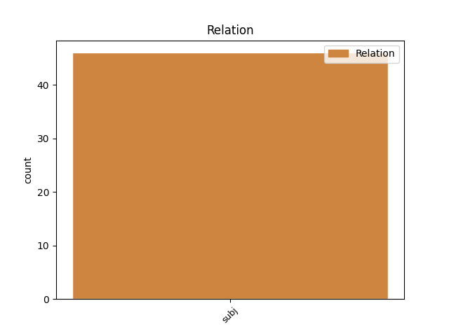
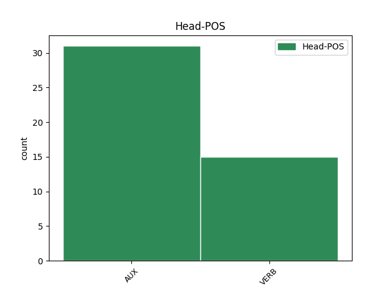
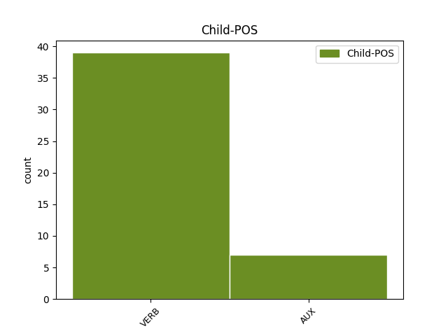

Distribution of features within this leaf



Agreement Rules sorted by frequency.
- When the dependent token is the subject(subj) of the head token,
1 Seleção _ _ _ _ 0 _ _ _
2 é _ _ _ _ 0 _ _ _
3 isso _ _ _ _ 0 _ _ _
4 , _ _ _ _ 0 _ _ _
5 joga jogar VERB _ Mood=Ind|Number=Sing|Person=3|Tense=Pres|VerbForm=Fin 0 _ _ _
6 quem _ _ _ _ 0 _ _ _
7 está estar AUX _ Mood=Ind|Number=Sing|Person=3|Tense=Pres|VerbForm=Fin 5 subj _ _
8 melhor _ _ _ _ 0 _ _ _
9 , _ _ _ _ 0 _ _ _
10 não _ _ _ _ 0 _ _ _
11 tem _ _ _ _ 0 _ _ _
12 esse _ _ _ _ 0 _ _ _
13 negócio _ _ _ _ 0 _ _ _
14 de _ _ _ _ 0 _ _ _
15 nome _ _ _ _ 0 _ _ _
16 . _ _ _ _ 0 _ _ _
Disagree Examples:
1 O _ _ _ _ 0 _ _ _
2 que _ _ _ _ 0 _ _ _
3 acontece _ _ _ _ 0 _ _ _
4 é _ _ _ _ 0 _ _ _
5 que _ _ _ _ 0 _ _ _
6 , _ _ _ _ 0 _ _ _
7 em _ _ _ _ 0 _ _ _
8 a _ _ _ _ 0 _ _ _
9 altura _ _ _ _ 0 _ _ _
10 em _ _ _ _ 0 _ _ _
11 que _ _ _ _ 0 _ _ _
12 foram _ _ _ _ 0 _ _ _
13 feitas _ _ _ _ 0 _ _ _
14 as _ _ _ _ 0 _ _ _
15 estimativas _ _ _ _ 0 _ _ _
16 de _ _ _ _ 0 _ _ _
17 as _ _ _ _ 0 _ _ _
18 receitas _ _ _ _ 0 _ _ _
19 em _ _ _ _ 0 _ _ _
20 o _ _ _ _ 0 _ _ _
21 orçamento _ _ _ _ 0 _ _ _
22 , _ _ _ _ 0 _ _ _
23 era ser AUX _ Mood=Ind|Number=Sing|Person=3|Tense=Imp|VerbForm=Fin 0 _ _ _
24 já _ _ _ _ 0 _ _ _
25 sabido _ _ _ _ 0 _ _ _
26 que _ _ _ _ 0 _ _ _
27 o _ _ _ _ 0 _ _ _
28 cenário _ _ _ _ 0 _ _ _
29 internacional _ _ _ _ 0 _ _ _
30 adiantado _ _ _ _ 0 _ _ _
31 por _ _ _ _ 0 _ _ _
32 o _ _ _ _ 0 _ _ _
33 Fundo _ _ _ _ 0 _ _ _
34 Monetário _ _ _ _ 0 _ _ _
35 Internacional _ _ _ _ 0 _ _ _
36 poderia poder VERB _ Mood=Cnd|Number=Sing|Person=3|VerbForm=Fin 23 subj _ _
37 ser _ _ _ _ 0 _ _ _
38 optimista _ _ _ _ 0 _ _ _
39 . _ _ _ _ 0 _ _ _
1 Lawrence _ _ _ _ 0 _ _ _
2 Summers _ _ _ _ 0 _ _ _
3 evitou _ _ _ _ 0 _ _ _
4 atacar _ _ _ _ 0 _ _ _
5 os _ _ _ _ 0 _ _ _
6 países _ _ _ _ 0 _ _ _
7 de _ _ _ _ 0 _ _ _
8 o _ _ _ _ 0 _ _ _
9 G7 _ _ _ _ 0 _ _ _
10 , _ _ _ _ 0 _ _ _
11 mas _ _ _ _ 0 _ _ _
12 não _ _ _ _ 0 _ _ _
13 pôde _ _ _ _ 0 _ _ _
14 deixar _ _ _ _ 0 _ _ _
15 de _ _ _ _ 0 _ _ _
16 falar _ _ _ _ 0 _ _ _
17 em _ _ _ _ 0 _ _ _
18 o _ _ _ _ 0 _ _ _
19 Japão _ _ _ _ 0 _ _ _
20 , _ _ _ _ 0 _ _ _
21 sublinhando _ _ _ _ 0 _ _ _
22 que _ _ _ _ 0 _ _ _
23 os _ _ _ _ 0 _ _ _
24 EUA _ _ _ _ 0 _ _ _
25 « _ _ _ _ 0 _ _ _
26 não _ _ _ _ 0 _ _ _
27 manipulam _ _ _ _ 0 _ _ _
28 artificialmente _ _ _ _ 0 _ _ _
29 as _ _ _ _ 0 _ _ _
30 taxas _ _ _ _ 0 _ _ _
31 de _ _ _ _ 0 _ _ _
32 câmbio _ _ _ _ 0 _ _ _
33 » _ _ _ _ 0 _ _ _
34 e _ _ _ _ 0 _ _ _
35 que _ _ _ _ 0 _ _ _
36 é ser AUX _ Mood=Ind|Number=Sing|Person=3|Tense=Pres|VerbForm=Fin 0 _ _ _
37 seu _ _ _ _ 0 _ _ _
38 desejo _ _ _ _ 0 _ _ _
39 e _ _ _ _ 0 _ _ _
40 de _ _ _ _ 0 _ _ _
41 todo _ _ _ _ 0 _ _ _
42 o _ _ _ _ 0 _ _ _
43 mundo _ _ _ _ 0 _ _ _
44 que _ _ _ _ 0 _ _ _
45 este _ _ _ _ 0 _ _ _
46 país _ _ _ _ 0 _ _ _
47 « _ _ _ _ 0 _ _ _
48 volte voltar VERB _ Mood=Sub|Number=Sing|Person=3|Tense=Pres|VerbForm=Fin 36 subj _ MWE=volte_a|MWEPOS=AUX
49 a _ _ _ _ 0 _ _ _
50 ter _ _ _ _ 0 _ _ _
51 um _ _ _ _ 0 _ _ _
52 crescimento _ _ _ _ 0 _ _ _
53 rápido _ _ _ _ 0 _ _ _
54 » _ _ _ _ 0 _ _ _
55 . _ _ _ _ 0 _ _ _
1 Mas _ _ _ _ 0 _ _ _
2 a _ _ _ _ 0 _ _ _
3 exposição _ _ _ _ 0 _ _ _
4 estará _ _ _ _ 0 _ _ _
5 patente _ _ _ _ 0 _ _ _
6 até _ _ _ _ 0 _ _ _
7 6 _ _ _ _ 0 _ _ _
8 de _ _ _ _ 0 _ _ _
9 Fevereiro _ _ _ _ 0 _ _ _
10 e _ _ _ _ 0 _ _ _
11 é ser AUX _ Mood=Ind|Number=Sing|Person=3|Tense=Pres|VerbForm=Fin 0 _ _ _
12 provável _ _ _ _ 0 _ _ _
13 que _ _ _ _ 0 _ _ _
14 , _ _ _ _ 0 _ _ _
15 em _ _ _ _ 0 _ _ _
16 as _ _ _ _ 0 _ _ _
17 suas _ _ _ _ 0 _ _ _
18 visitas _ _ _ _ 0 _ _ _
19 de _ _ _ _ 0 _ _ _
20 rotina _ _ _ _ 0 _ _ _
21 a _ _ _ _ 0 _ _ _
22 os _ _ _ _ 0 _ _ _
23 museus _ _ _ _ 0 _ _ _
24 , _ _ _ _ 0 _ _ _
25 grande _ _ _ _ 0 _ _ _
26 parte _ _ _ _ 0 _ _ _
27 de _ _ _ _ 0 _ _ _
28 os _ _ _ _ 0 _ _ _
29 washingtonianos _ _ _ _ 0 _ _ _
30 venham vir VERB _ Mood=Sub|Number=Plur|Person=3|Tense=Pres|VerbForm=Fin 11 subj _ MWE=venham_a|MWEPOS=AUX
31 a _ _ _ _ 0 _ _ _
32 visitá _ _ _ _ 0 _ _ _
33 la _ _ _ _ 0 _ _ _
34 . _ _ _ _ 0 _ _ _
1 Mas _ _ _ _ 0 _ _ _
2 quem _ _ _ _ 0 _ _ _
3 não _ _ _ _ 0 _ _ _
4 se _ _ _ _ 0 _ _ _
5 fiar fiar VERB _ Mood=Sub|Number=Sing|Person=3|Tense=Fut|VerbForm=Fin 9 subj _ _
6 em _ _ _ _ 0 _ _ _
7 estas _ _ _ _ 0 _ _ _
8 aparências _ _ _ _ 0 _ _ _
9 descobrirá descobrir VERB _ Mood=Ind|Number=Sing|Person=3|Tense=Fut|VerbForm=Fin 0 _ _ _
10 que _ _ _ _ 0 _ _ _
11 , _ _ _ _ 0 _ _ _
12 em _ _ _ _ 0 _ _ _
13 esta _ _ _ _ 0 _ _ _
14 amálgama _ _ _ _ 0 _ _ _
15 de _ _ _ _ 0 _ _ _
16 sonoridades _ _ _ _ 0 _ _ _
17 informes _ _ _ _ 0 _ _ _
18 -- _ _ _ _ 0 _ _ _
19 ou _ _ _ _ 0 _ _ _
20 em _ _ _ _ 0 _ _ _
21 esta _ _ _ _ 0 _ _ _
22 acumulação _ _ _ _ 0 _ _ _
23 de _ _ _ _ 0 _ _ _
24 nuvens _ _ _ _ 0 _ _ _
25 ( _ _ _ _ 0 _ _ _
26 cinzentas _ _ _ _ 0 _ _ _
27 ) _ _ _ _ 0 _ _ _
28 com _ _ _ _ 0 _ _ _
29 formas _ _ _ _ 0 _ _ _
30 caprichosas _ _ _ _ 0 _ _ _
31 -- _ _ _ _ 0 _ _ _
32 toma _ _ _ _ 0 _ _ _
33 forma _ _ _ _ 0 _ _ _
34 um _ _ _ _ 0 _ _ _
35 discurso _ _ _ _ 0 _ _ _
36 feito _ _ _ _ 0 _ _ _
37 de _ _ _ _ 0 _ _ _
38 premonições _ _ _ _ 0 _ _ _
39 , _ _ _ _ 0 _ _ _
40 ameaças _ _ _ _ 0 _ _ _
41 , _ _ _ _ 0 _ _ _
42 trovões _ _ _ _ 0 _ _ _
43 e _ _ _ _ 0 _ _ _
44 relâmpagos _ _ _ _ 0 _ _ _
45 , _ _ _ _ 0 _ _ _
46 mortes _ _ _ _ 0 _ _ _
47 anunciadas _ _ _ _ 0 _ _ _
48 . _ _ _ _ 0 _ _ _
1 E _ _ _ _ 0 _ _ _
2 quanto _ _ _ _ 0 _ _ _
3 a _ _ _ _ 0 _ _ _
4 a _ _ _ _ 0 _ _ _
5 tão _ _ _ _ 0 _ _ _
6 falada _ _ _ _ 0 _ _ _
7 questão _ _ _ _ 0 _ _ _
8 de _ _ _ _ 0 _ _ _
9 segurança _ _ _ _ 0 _ _ _
10 , _ _ _ _ 0 _ _ _
11 por _ _ _ _ 0 _ _ _
12 o _ _ _ _ 0 _ _ _
13 menos _ _ _ _ 0 _ _ _
14 Andreia _ _ _ _ 0 _ _ _
15 Silva _ _ _ _ 0 _ _ _
16 , _ _ _ _ 0 _ _ _
17 de _ _ _ _ 0 _ _ _
18 partida _ _ _ _ 0 _ _ _
19 para _ _ _ _ 0 _ _ _
20 Dublin _ _ _ _ 0 _ _ _
21 , _ _ _ _ 0 _ _ _
22 garantia _ _ _ _ 0 _ _ _
23 que _ _ _ _ 0 _ _ _
24 « _ _ _ _ 0 _ _ _
25 não _ _ _ _ 0 _ _ _
26 havia _ _ _ _ 0 _ _ _
27 meio _ _ _ _ 0 _ _ _
28 de _ _ _ _ 0 _ _ _
29 transporte _ _ _ _ 0 _ _ _
30 mais _ _ _ _ 0 _ _ _
31 seguro _ _ _ _ 0 _ _ _
32 » _ _ _ _ 0 _ _ _
33 e _ _ _ _ 0 _ _ _
34 aludia _ _ _ _ 0 _ _ _
35 a _ _ _ _ 0 _ _ _
36 o _ _ _ _ 0 _ _ _
37 acidente _ _ _ _ 0 _ _ _
38 de _ _ _ _ 0 _ _ _
39 a _ _ _ _ 0 _ _ _
40 madrugada _ _ _ _ 0 _ _ _
41 em _ _ _ _ 0 _ _ _
42 a _ _ _ _ 0 _ _ _
43 portagem _ _ _ _ 0 _ _ _
44 de _ _ _ _ 0 _ _ _
45 os _ _ _ _ 0 _ _ _
46 Carvalhos _ _ _ _ 0 _ _ _
47 para _ _ _ _ 0 _ _ _
48 exemplificar _ _ _ _ 0 _ _ _
49 como _ _ _ _ 0 _ _ _
50 viajar viajar VERB _ Mood=Sub|Number=Sing|Person=3|Tense=Fut|VerbForm=Fin 53 subj _ _
51 por _ _ _ _ 0 _ _ _
52 terra _ _ _ _ 0 _ _ _
53 é ser AUX _ Mood=Ind|Number=Sing|Person=3|Tense=Pres|VerbForm=Fin 0 _ _ _
54 mais _ _ _ _ 0 _ _ _
55 perigoso _ _ _ _ 0 _ _ _
56 de _ _ _ _ 0 _ _ _
57 o _ _ _ _ 0 _ _ _
58 que _ _ _ _ 0 _ _ _
59 por _ _ _ _ 0 _ _ _
60 o _ _ _ _ 0 _ _ _
61 ar _ _ _ _ 0 _ _ _
62 . _ _ _ _ 0 _ _ _